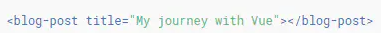
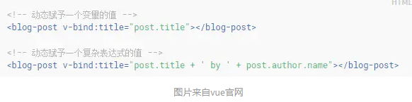
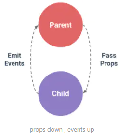
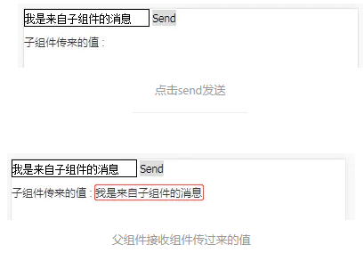

# 父传子传值
第一个就是要明白怎么在父页面中向子组件中传值？你可以给子组件传入一个静态的值：

但我们一般都是需要传动态的值，所以需要
v-bind绑定，当然，你传的值可以是数字、对象、数组等等，参见 vue 官网。
第二个就是要知道如何在子组件中接受父页面传过来的值，有几点需要了解：
- 组件实例的作用域是孤立的。
- 子组件要显式的用
props选项声明它预期的数据，如：
// 某个子组件中： | |
export default { | |
props: { | |
title: { | |
type: String, | |
default: 'hello world' | |
} | |
} | |
} |
以上就是 单向数据流 的一般表现了： 父级 prop 的更新会向下流动到子组件中，但是反过来则不行。
# 子传父传值
# 1. 基本概念
在 vue 中，父子组件的关系可以总结为
prop向下传递，事件向上传递。父组件通过prop给子组件下发数据，子组件通过事件给父组件发送信息。
每个 Vue 实例都实现了事件接口：使用
$on(evntName)监听事件；使用$emit(eventName,optionalPayload)触发事件。另外，父组件可以在使用子组件的地方直接用v-on来监听子组件触发的事件。
# 2. 举例说明
父组件在组件上定义了一个自定义事件
childFn，事件名为parentFn用于接受子组件传过来的message值。<!-- 父组件 -->
<template>
<div class="test">
<test-com @childFn="parentFn"></test-com>
<br/>
子组件传来的值 : <!--swig0-->
</div>
</template>
<script>
export default {
// ...data() {
return {
message: ''
}},
methods: {
parentFn(payload) {
this.message = payload;
}}}</script>
子组件是一个
buttton按钮，并为其添加了一个click事件，当点击的时候使用$emit()触发事件，把message传给父组件。<!-- 子组件 -->
<template>
<div class="testCom">
<input type="text" v-model="message" />
<button @click="click">Send</button>
</div>
</template>
<script>
export default {
// ...data() {
return {
// 默认message: '我是来自子组件的消息'
}},
methods: {
click() {
this.$emit('childFn', this.message);
}}}</script>
这样我们就基本实现了子组件向父组件发送值了:

# 通过 sync 实现数据双向绑定， 从而同步父子组件数据
在某些特殊的需求场景下，我们可能会希望父子组件中的数据时刻保持同步， 这时候你可能会像下面这样做：
这是父组件中的 template:
<son :foo="bar" v-on:update="val => bar = val"></son> |
在子组件中， 我们通过 props 声明的方式接收 foo 并使用
props: { | |
foo: [type] | |
} |
同时每当子组件中数据改变的时候，通过
this.$emit('update', newValue) |
把参数 newValue 传递给父组件 template 中监听函数中的 "val"。然后通过
val => bar = val |
这个表达式就实现了 bar = newValue. 这个时候，我们发现父组件中的关键数据 bar 被子组件改变（相等）了！
通过数据的双向绑定， 父（组件）可以修改子的数据， 子也可以修改父的数据
Vue 提供了 sync 修饰符简化上面的代码，例如：
<comp :foo.sync="bar"></comp> |
会被扩展为：
<comp :foo="bar" @update:foo="val => bar = val"></comp> |
然后你需要在子组件中改变父组件数据的时候， 需要触发以下的自定义事件:
this.$emit("update:foo", newValue) |
来源：https://www.cnblogs.com/penghuwan/p/7473375.html
# 非父子组件传值（一）
非父子组件（跨级组件和兄弟组件）通信时，使用了 bus （中央事件总线）的一个方法，用来触发和接收事件，进一步起到通信的作用。
公共 js
// 公共 bus.js | |
// 非父子组件之间传值，需要定义个公共的公共实例文件 bus.js，作为中间仓库来传值，不然路由组件之间达不到传值的效果 | |
import Vue from 'vue' | |
export default new Vue() |
// 组件 B | |
// 引入公共的 bug，来做为中间传达的工具 | |
import Bus from './bus.js' | |
// 在 mounted 进行监听 | |
mounted () { | |
// 用 $on 事件来接收参数 | |
Bus.$on('msgToB', (data) => { | |
//data 就是组件 A 传过来的值 | |
console.log(data) | |
}) | |
}, |
组件A | |
// 引入公共的 bug，来做为中间传达的工具 | |
import Bus from './bus.js' | |
// 创建方法进行传递值 | |
// 用 $emit 事件来传递参数 | |
Bus.$emit('msgToB', this.msg) |
# 非父子组件传值（二）
Vue 组件间的通信 pubsub-js 实现步骤解析
首先安装 pubsub-js
npm install --save pubsub-js
订阅方组件
import PubSub from 'pubsub-js'
mounted(){ // 执行异常代码
// 订阅消息PubSub.subscribe('deleteTodo',(msg,index)=>{
this.deleteTodo(index) // 调用 deleteTodo 方法执行真正的业务逻辑
});
},
发布方组件
<script>
import PubSub from 'pubsub-js'
export default{
methods: {
handlerEnter(isEnter){
if (isEnter) {
this.bgColor = 'gray';
this.isShow = true;
} else {
this.bgColor = 'white';
this.isShow = false;
}},
deleteItem(){
// 表示从 this 对象中取出 todo,index,deleteTodo 三个对象const {todo, index, deleteTodo} = this
if (window.confirm(`确认删除${todo.title}吗？`)) {
// 发布消息PubSub.publish('deleteTodo', index); //deleteTodo 一定要与订阅方名称一样，index 是通信的具体数据
}}}}</script>
也可以在 src 下的 main.js 中引用：
import PubSub from 'pubsub-js' | |
Vue.prototype.PubSub = PubSub |